Modifier les textes, ajouter un film, publier une sélection en festival, présenter un artiste : tout se fait depuis votre navigateur, sans développeur et sans redéploiement.
votre-site/adminÉdition novembre 2026
Sommaire
Ce que vous pouvez faire seul
01 — Se connecter, rôles et sécuritép. 3
02 — L'éditeur de contenu en un coup d'œilp. 4
03 — La règle d'or : modifier, prévisualiser, publierp. 5
04 — Procédure : ajouter un nouveau filmp. 6
05 — Procédure : mettre à jour la presse et les festivalsp. 8
06 — Publicitésp. 10
07 — Artistes résidentsp. 11
08 — Fondateurs, logos et images du sitep. 13
09 — Coordonnées et textes du sitep. 14
10 — Historique des versionsp. 15
11 — Messages, comptes éditeurs, mot de passep. 16
12 — Procédure : vidéos AI Studio et The Voice Roomp. 18
13 — Bonnes pratiques et questions fréquentesp. 21
Outsiders Production02
01 · Connexion
01
Se connecter
L'espace d'administration est à l'adresse de votre site suivie de /admin, par exemple www.outsidersproduction.ma/admin.
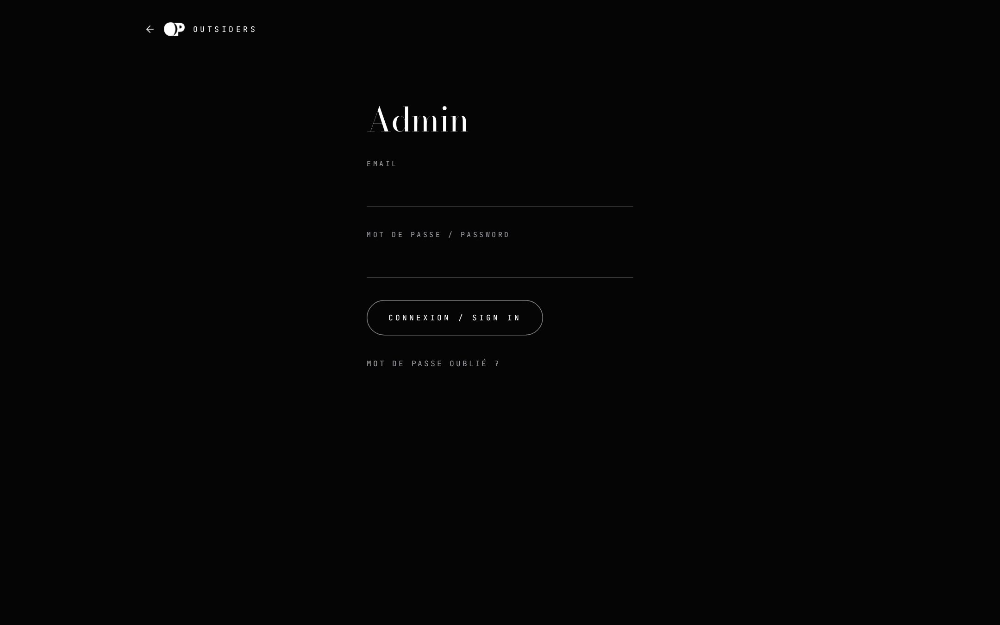
Écran de connexion : email, mot de passe, puis « Connexion ».
RôleAdministrateurLit les messages du formulaire de contact, modifie tout le contenu, crée ou supprime les comptes éditeurs, change son mot de passe.
RôleÉditeurModifie le contenu du site et son propre mot de passe. Il ne voit pas les messages et ne gère pas les comptes.
Mot de passe oubliéCliquez sur « Mot de passe oublié ? » sous le formulaire : un lien de réinitialisation est envoyé par email. Après plusieurs essais ratés, la connexion est bloquée quelques minutes par sécurité.
Outsiders Production · Mode d'emploi03
02 · L'éditeur
02
L'éditeur en un coup d'œil
Onglet Contenu du site : chaque partie du site a son onglet. Les textes existent en français et en anglais.
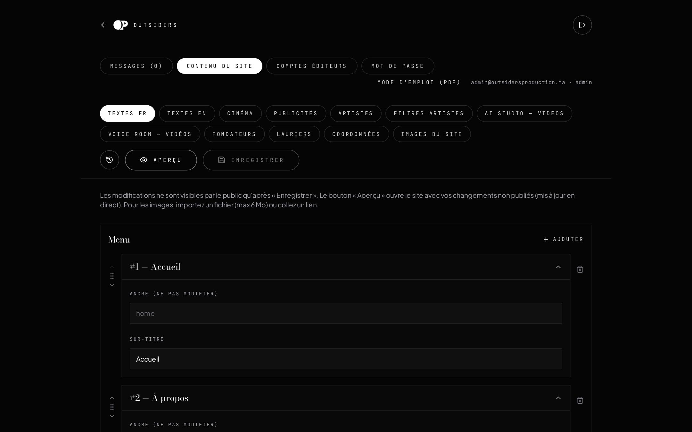
Les onglets de contenu, la barre d'actions et les champs à remplir.
Onglet
Ce qu'il contient
Textes FR / EN
Tous les textes du site : menu, accueil, à propos, fondateurs (rôle, biographie), presse, contact, pied de page.
Cinéma · Publicités
Les films et les campagnes, avec affiche, infos et lien vidéo.
Artistes · Filtres
La page « Artistes résidents » et ses catégories de filtre.
AI Studio · Voice Room — vidéos
Vidéos d'ouverture, projets, capsules et partenaires des deux pages.
Fondateurs · Lauriers
Noms et photos des fondateurs, logos des festivals.
Coordonnées · Images
Email, téléphone, réseaux sociaux, logos et grandes images du site.
Outsiders Production · Mode d'emploi04
03 · Publier
03
La règle d'or
Rien n'est visible par le public tant que vous n'avez pas cliqué sur « Enregistrer ». Vous pouvez donc tester sans risque.
Étape 1ModifierChangez les champs dans l'onglet voulu.
Étape 2AperçuOuvre le site avec vos changements non publiés, mis à jour en direct.
Étape 3EnregistrerPublie immédiatement et crée une version dans l'historique.
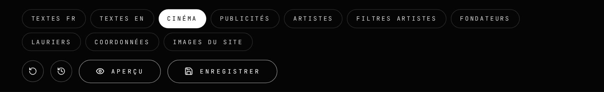
La barre d'actions : annuler (flèche), historique (horloge), Aperçu, Enregistrer.
Les gestes communs à toutes les listes
Geste
Effet
+ Ajouter
Crée un nouvel élément vide en bas de la liste.
Poignée ⋮⋮ (glisser)
Glissez-déposez pour changer l'ordre. Les flèches haut/bas font la même chose, une place à la fois.
Corbeille
Supprime l'élément. Avant d'enregistrer, la flèche « annuler » le fait revenir ; après, restaurez une version.
Bouton image
Importe une image depuis votre ordinateur (6 Mo maximum). Vous pouvez aussi coller un lien.
Flèche annuler
Efface toutes les modifications non enregistrées.
Outsiders Production · Mode d'emploi05
04 · Procédure
04
Ajouter un nouveau film
Connectez-vous, ouvrez Contenu du site puis l'onglet Cinéma.
Cliquez sur + Ajouter en haut à droite de la liste : une fiche vide apparaît en bas.
Ouvrez la fiche en cliquant sur son titre, puis remplissez les champs (voir le tableau page suivante).
Pour l'affiche, cliquez sur le bouton image à droite du champ Affiche et choisissez le fichier.
Placez le film à la bonne position avec la poignée ⋮⋮ : le premier de la liste est le premier affiché.
Cliquez sur Aperçu pour vérifier, puis sur Enregistrer.
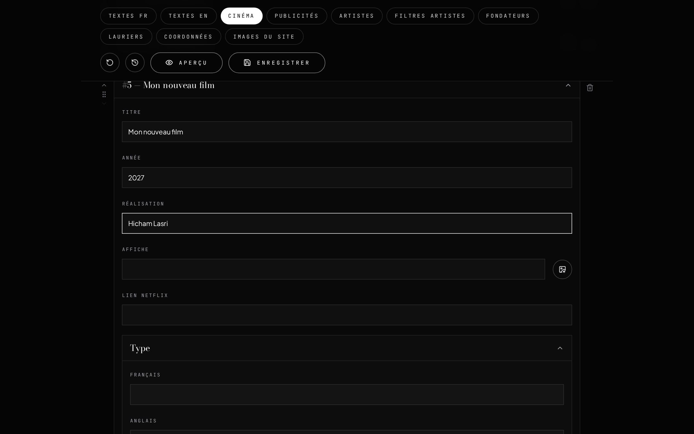
Une nouvelle fiche film en cours de saisie.
Outsiders Production · Mode d'emploi06
04 · Les champs d'un film
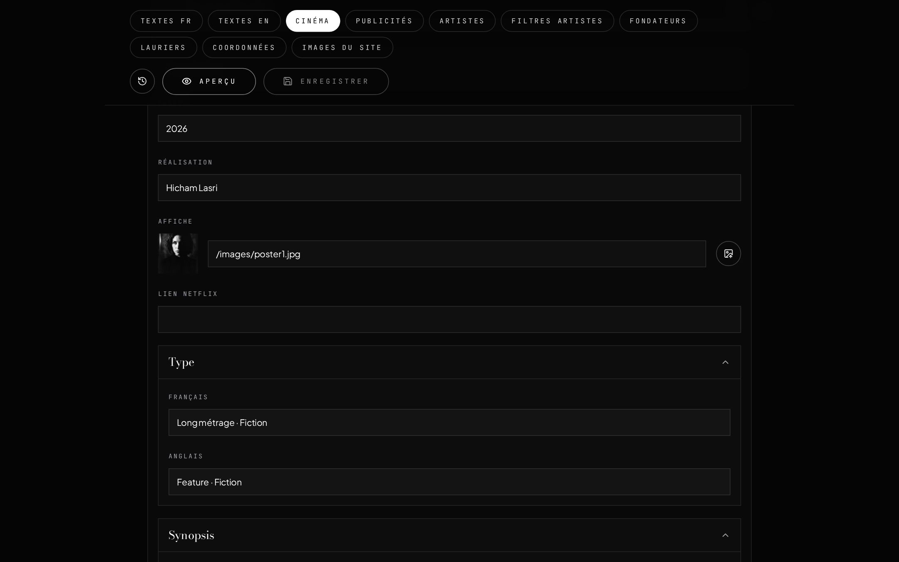
Fiche d'un film existant : affiche, lien, type, synopsis.
Champ
À saisir
Titre · Année · Réalisation
Le titre tel qu'il doit apparaître, l'année de sortie, le ou les réalisateurs.
Lien vers le film ou la bande-annonce (Netflix, YouTube, Vimeo…). Il s'ouvre dans un nouvel onglet. Laissé vide, le site affiche « Bientôt ».
Type FR / EN
Ex. « Long métrage · Fiction » et « Feature · Fiction ».
Synopsis FR / EN
2 à 4 phrases dans chaque langue.
Festivals
Une ligne par sélection, ex. « Berlinale · Panorama ». + Ajouter pour une ligne de plus.
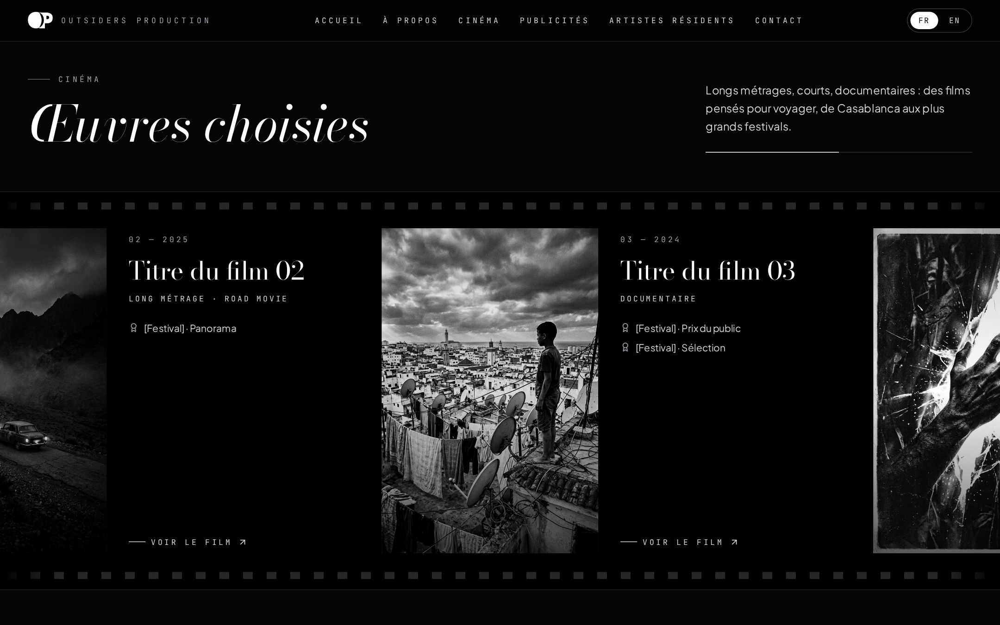
Le résultat sur le site : la bande horizontale « Œuvres choisies ».
Outsiders Production · Mode d'emploi07
05 · Procédure
05
Mettre à jour presse & festivals
Les actualités du studio (citations de presse, sélections en festival) se trouvent dans la section « Sélections & presse » du site.
Ajouter une citation de presse
Onglet Textes FR, ouvrez le bloc Sélections & presse.
Dans Citations, cliquez sur + Ajouter, saisissez le Texte et la Source (nom du média).
Faites la même chose dans Textes EN pour la version anglaise.
Vous pouvez aussi changer le titre, la phrase d'introduction et la mention sous les lauriers.
Aperçu, puis Enregistrer.
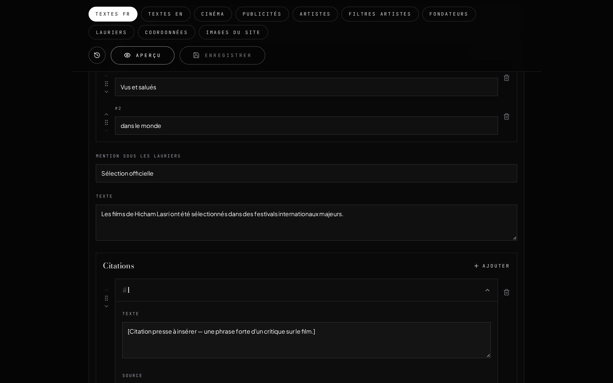
Le bloc « Sélections & presse » et ses citations.
Outsiders Production · Mode d'emploi08
05 · Les lauriers
Ajouter une sélection en festival
Onglet Lauriers, cliquez sur + Ajouter.
Nom : le festival (ex. « Venise »). Détail : la section (ex. « Orizzonti »).
Glissez le laurier à la bonne place, puis Enregistrer.
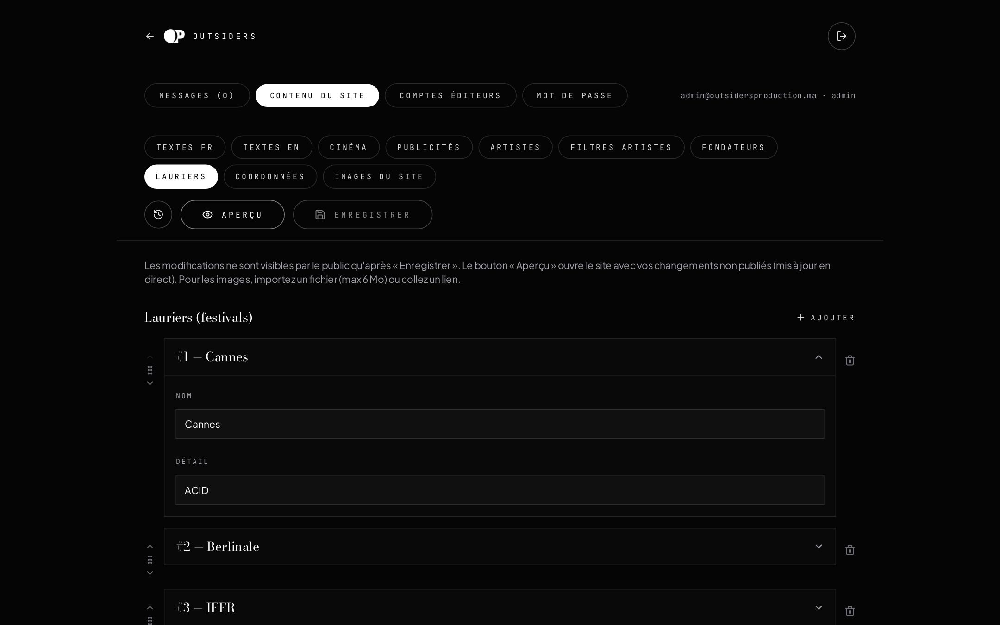
La liste des lauriers, réordonnable par glisser-déposer.
AstucePensez aussi à ajouter la sélection dans la fiche du film (champ Festivals, onglet Cinéma) pour qu'elle apparaisse sous l'affiche.
Outsiders Production · Mode d'emploi09
06 · Publicités
06
Publicités
Même principe que les films : onglet Publicités, + Ajouter, remplissez la fiche, Enregistrer.
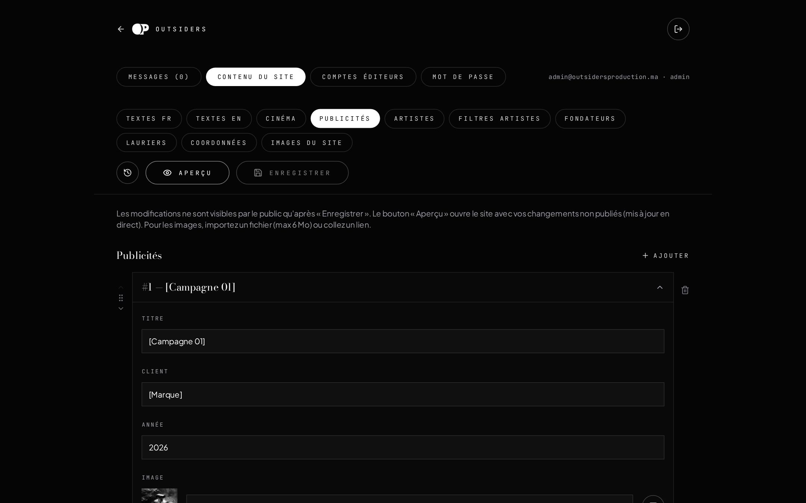
Une campagne : titre, client, année, image, lien vidéo.
Champ
À saisir
Titre · Client · Année
Nom de la campagne, marque, année.
Image
Image horizontale, idéalement 1920 × 1080 px.
Lien
Lien de la vidéo (YouTube, Vimeo…). Vide : « Bientôt ».
Outsiders Production · Mode d'emploi10
07 · Artistes résidents
07
Artistes résidents
Onglet Artistes, + Ajouter, ouvrez la fiche.
Nom, puis Identifiant d'URL : en minuscules, sans espaces ni accents (ex. « sara-benali »). Il devient l'adresse de sa page.
Catégories : une ligne par filtre, en reprenant exactement les clés de l'onglet Filtres artistes (ex. « directors », « morocco »).
Biographie en français et en anglais.
Film : une image de couverture et un lien vidéo (YouTube, Vimeo ou fichier .mp4), lu en plein écran sur le site.
Photos : + Ajouter pour chaque image de la galerie, glissez pour l'ordre.
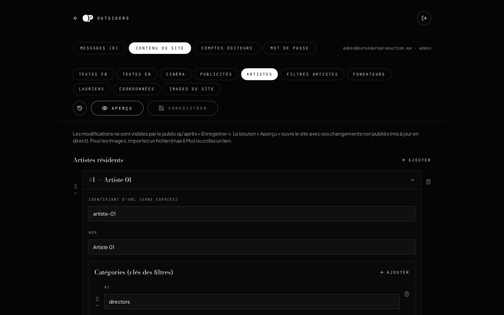
Fiche d'un artiste, ordre réglable par glisser-déposer.
Outsiders Production · Mode d'emploi11
07 · Film, photos et filtres
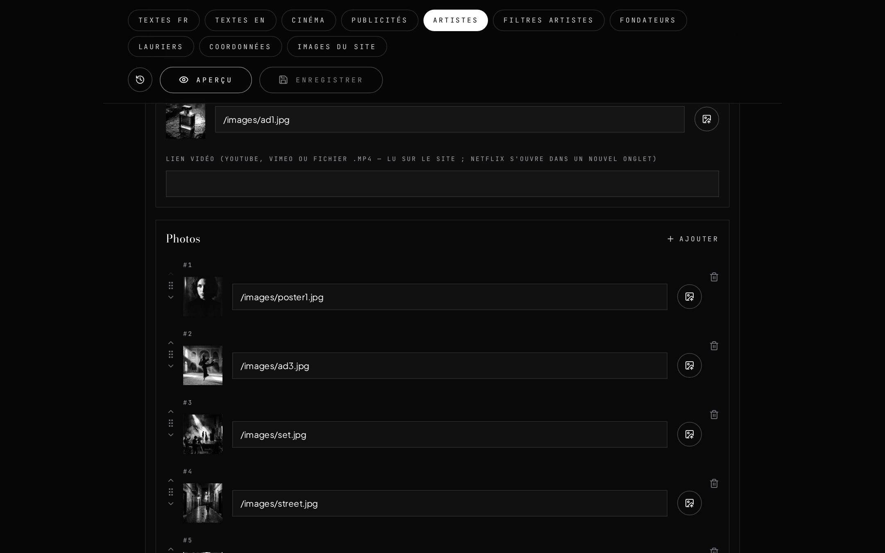
Le film (image + lien vidéo) et la galerie de photos.
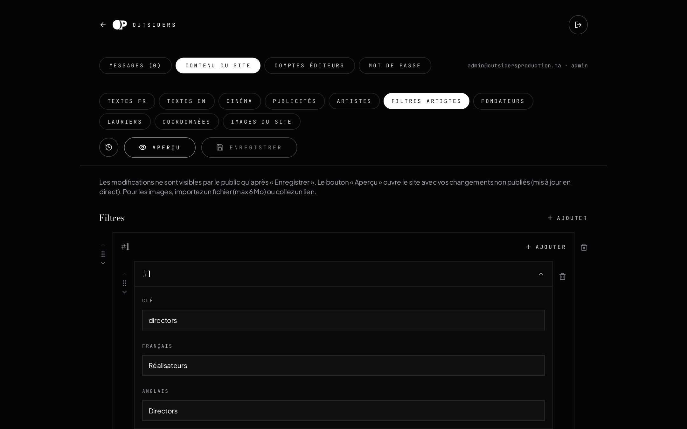
Onglet Filtres artistes : la clé sert dans les fiches, les libellés FR/EN sont affichés.
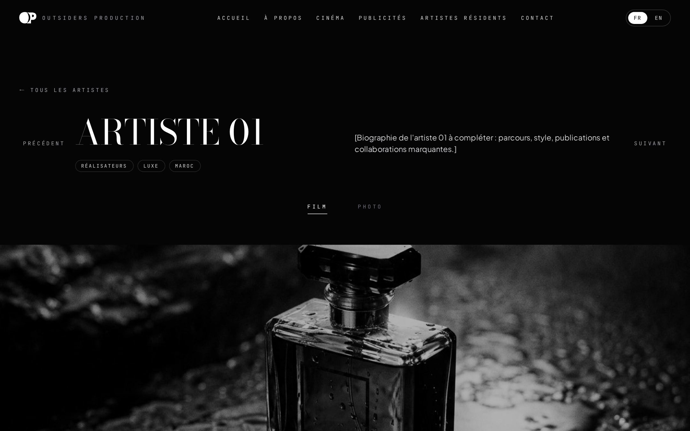
La page d'un artiste sur le site.
Ne modifiez pas la clé d'un filtre déjà utilisé : les artistes qui l'utilisent disparaîtraient de ce filtre. Créez plutôt un nouveau filtre.
Outsiders Production · Mode d'emploi12
08 · Visuels
08
Fondateurs, logos et images
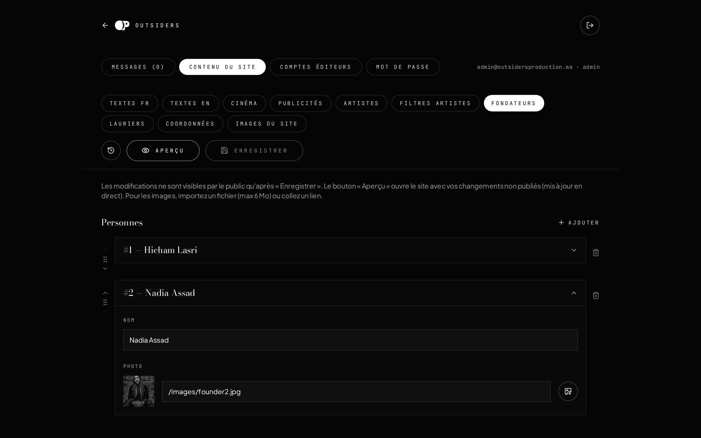
Onglet Fondateurs : nom et photo (portrait vertical).
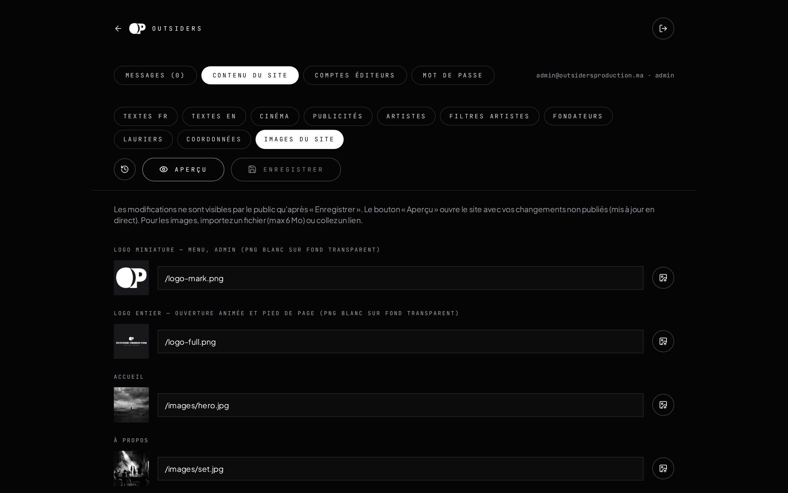
Onglet Images du site : logos, image d'accueil, à propos, manifeste.
Visuel
Recommandation
Photo fondateur
Portrait vertical (3:4), au moins 900 × 1200 px. Rôle et biographie : onglet Textes FR / EN, bloc Fondateurs.
Logo miniature
PNG blanc sur fond transparent. Affiché dans le menu et l'admin.
Logo entier
PNG blanc sur fond transparent, lettres bien séparées. Il est découpé automatiquement lettre par lettre pour l'ouverture animée, et affiché dans le pied de page.
Accueil · À propos · Manifeste
Grandes images horizontales, 2400 px de large minimum, en JPG.
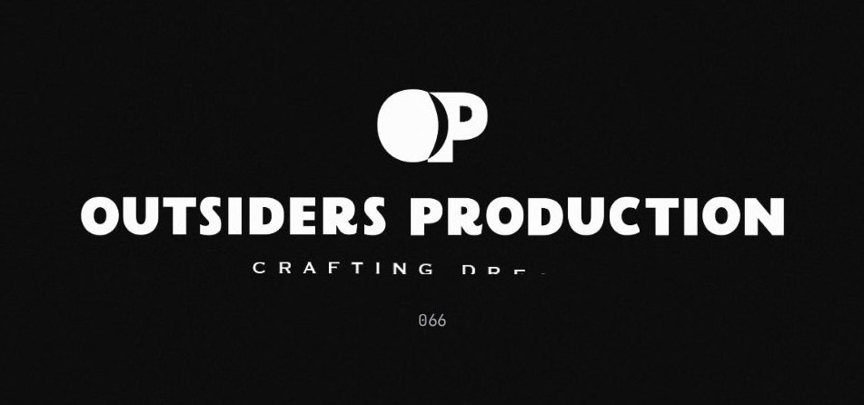
L'ouverture animée : le logo apparaît lettre par lettre.
Outsiders Production · Mode d'emploi13
09 · Coordonnées et textes
09
Coordonnées et textes
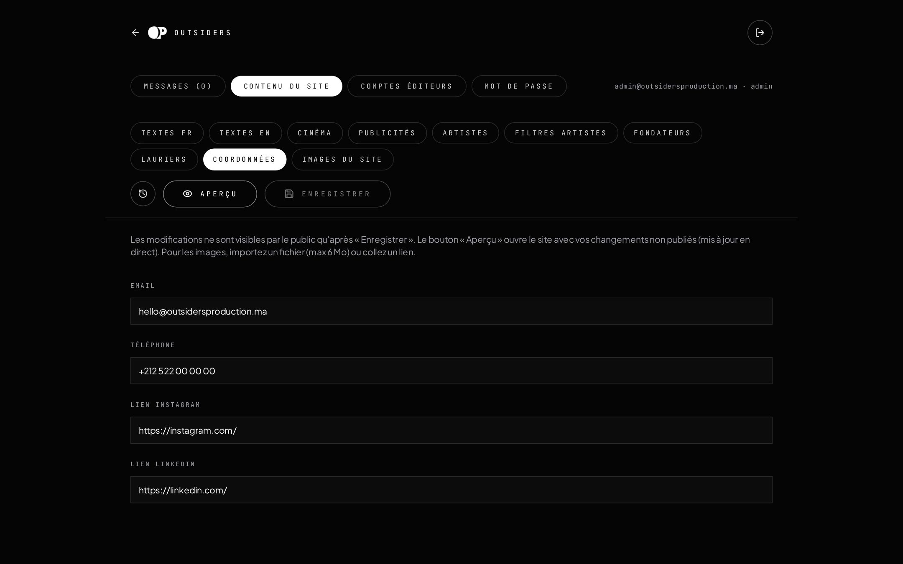
Onglet Coordonnées : email, téléphone, liens Instagram et LinkedIn.
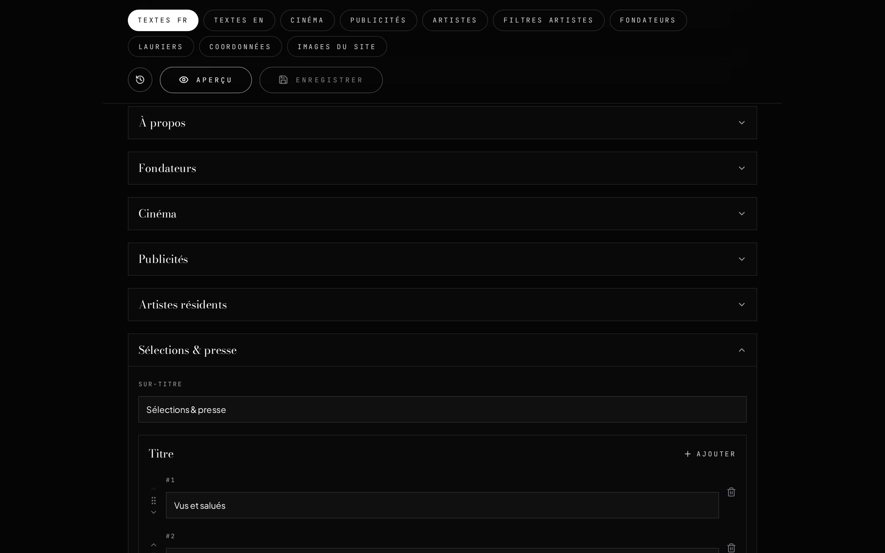
Onglet Textes FR : chaque bloc correspond à une section du site.
Les champs « Ancre » et « Page » sont grisés : ils relient le menu aux sections et ne doivent pas être modifiés.
Outsiders Production · Mode d'emploi14
10 · Historique
10
Historique des versions
Chaque « Enregistrer » crée une version. Les 10 dernières sont conservées : en cas d'erreur, revenez en arrière en un clic.
Cliquez sur l'icône horloge dans la barre d'actions.
Repérez la version à sa date, son heure et son auteur.
Cliquez sur Restaurer et confirmez : cette version est publiée immédiatement.
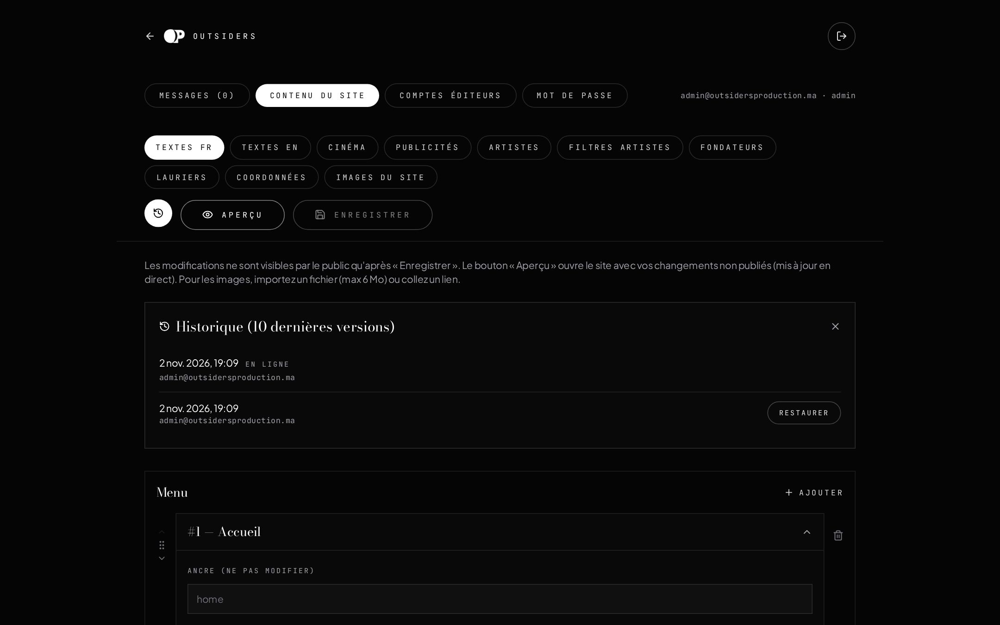
Le panneau d'historique.
Outsiders Production · Mode d'emploi15
11 · Administration
11
Messages
Réservé à l'administrateur. Chaque message du formulaire de contact arrive ici et est aussi envoyé par email.
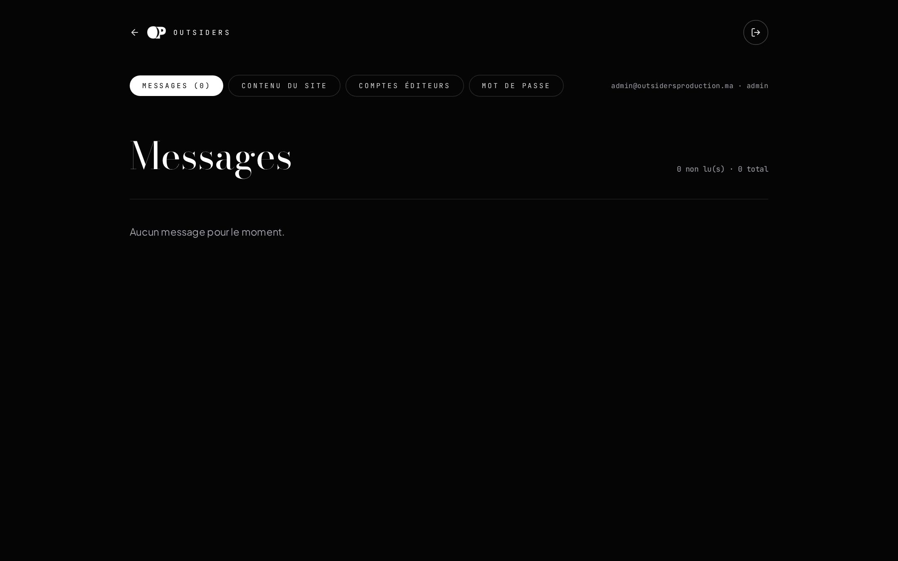
Onglet Messages : nombre de non lus, marquer comme lu, supprimer.
Outsiders Production · Mode d'emploi16
11 · Comptes et mot de passe
Créer un compte éditeur
Onglet Comptes éditeurs : saisissez le nom, l'email et un mot de passe provisoire.
Transmettez ces informations à la personne : elle pourra changer son mot de passe dans l'onglet Mot de passe.
Pour retirer l'accès, cliquez sur la corbeille à côté du compte.
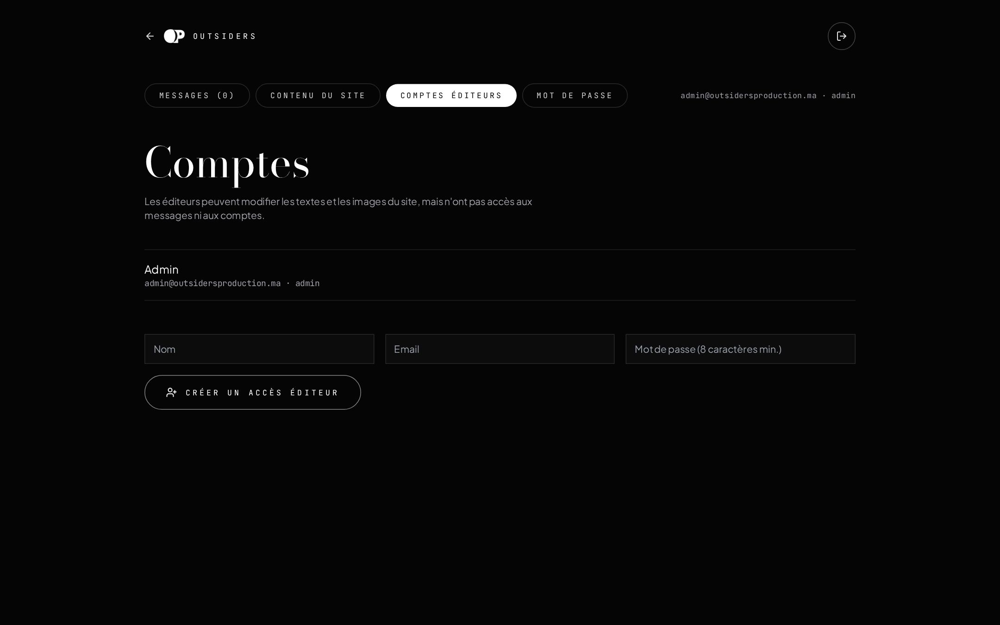
Comptes éditeurs.
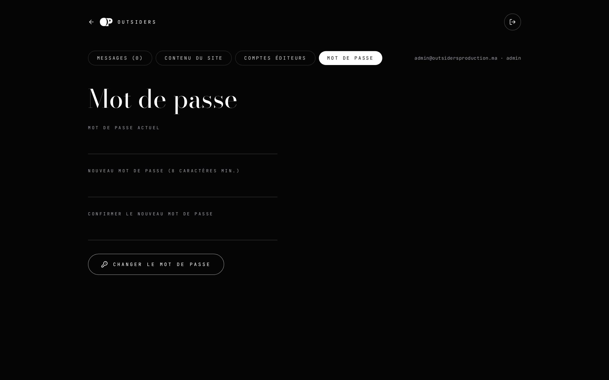
Changer son mot de passe : l'actuel, puis le nouveau.
Outsiders Production · Mode d'emploi17
12 · Procédure
12
Vidéos AI Studio & The Voice Room
Chaque page a sa vidéo d'ouverture plein écran et sa série de vidéos (projets pour AI Studio, capsules pour The Voice Room). Sur le site, elles tournent en boucle sans le son ; un clic les ouvre en plein écran avec le son.
Ajouter ou remplacer une vidéo
Mettez la vidéo en ligne sur Vimeo ou YouTube (publique ou « non répertoriée ») et copiez son lien.
Onglet AI Studio — vidéos ou Voice Room — vidéos.
Vidéo d'ouverture : collez le lien dans le champ Vidéo ; l'Image s'affiche pendant le chargement.
Projets / Capsules : ouvrez une fiche, renseignez le titre FR / EN, l'image de couverture et le lien vidéo. + Ajouter pour une vidéo de plus, poignée ⋮⋮ pour l'ordre.
Aperçu, puis Enregistrer.
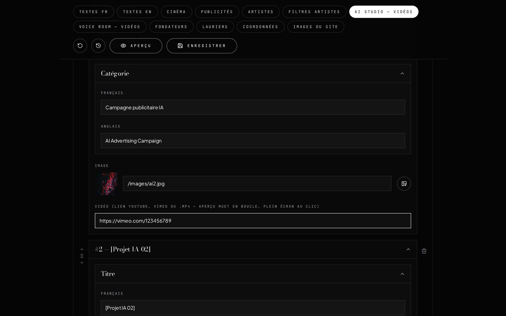
Une fiche projet AI Studio : catégorie, image de couverture et lien Vimeo.
Outsiders Production · Mode d'emploi18
12 · Textes et résultat
Pourquoi un lien plutôt qu'un fichier ?Les vidéos pèsent trop lourd pour l'import d'images (6 Mo maximum). Vimeo et YouTube les diffusent vite et en haute qualité partout dans le monde. Un lien direct vers un fichier .mp4 hébergé ailleurs fonctionne aussi.
Format
Recommandation
Vidéo d'ouverture
Horizontale 16:9, plan fort dès les premières secondes : c'est ce qui tourne en boucle.
Projets AI Studio
Horizontales 16:9. Le premier projet est affiché en grand.
Capsules Voice Room
Cadre vertical 4:5 : les formats verticaux ou carrés des réseaux sociaux s'y prêtent bien.
Modifier les textes
Onglets Textes FR et Textes EN, blocs AI Studio et The Voice Room : titre, accroche, prestations, paragraphes, collaboration à la une et crédits.
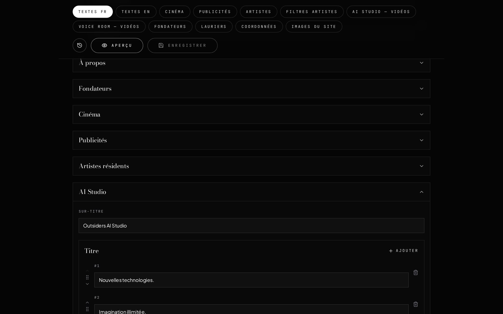
Le bloc AI Studio dans Textes FR.
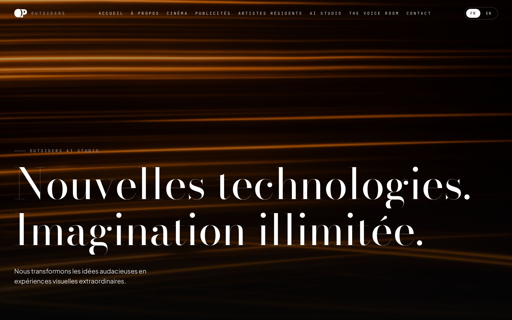
La page AI Studio sur le site.
Outsiders Production · Mode d'emploi19
12 · Partenaires et accueil
Partenaires engagés (The Voice Room)
Onglet Voice Room — vidéos, liste Partenaires, + Ajouter.
Nom de l'association ou du partenaire, Logo (PNG transparent, idéalement blanc), Site web facultatif.
Sans logo, le nom s'affiche en toutes lettres. Remplacez ou supprimez les « [Partenaire 0x] » d'exemple.
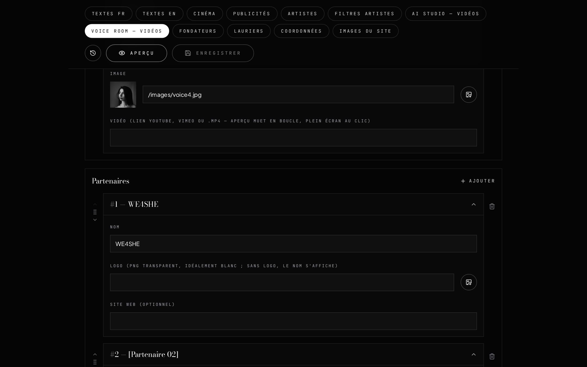
Une fiche partenaire.
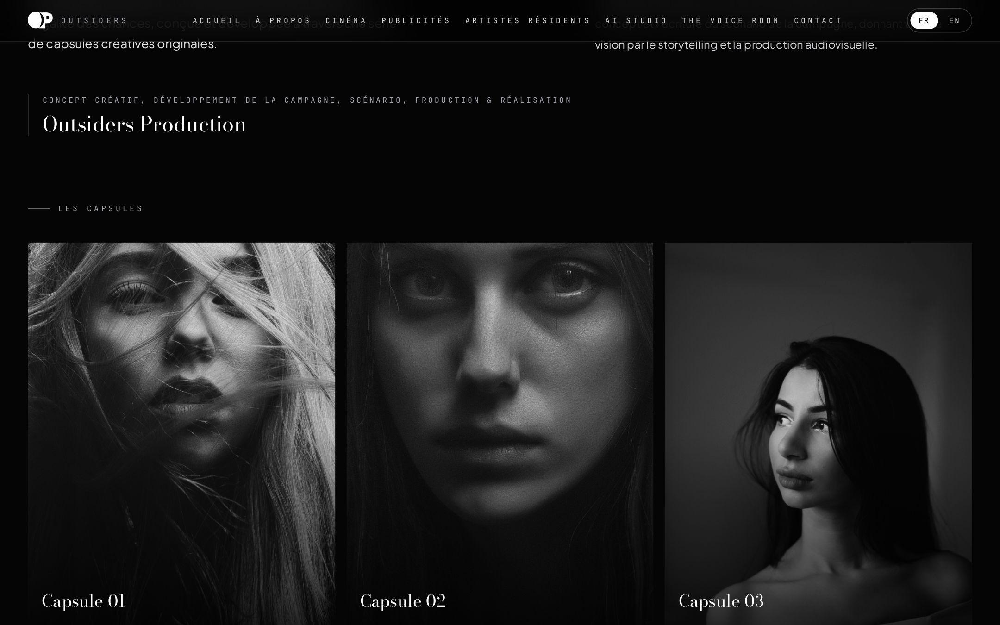
Collaboration WE4SHE et capsules sur le site.
Les bandeaux « À découvrir » de l'accueil
Avant le formulaire de contact, deux grands bandeaux mènent vers AI Studio et The Voice Room. Ils reprennent automatiquement l'image et la vidéo d'ouverture de chaque page. Leurs textes se modifient dans Textes FR / EN, bloc Bandeaux « À découvrir ».
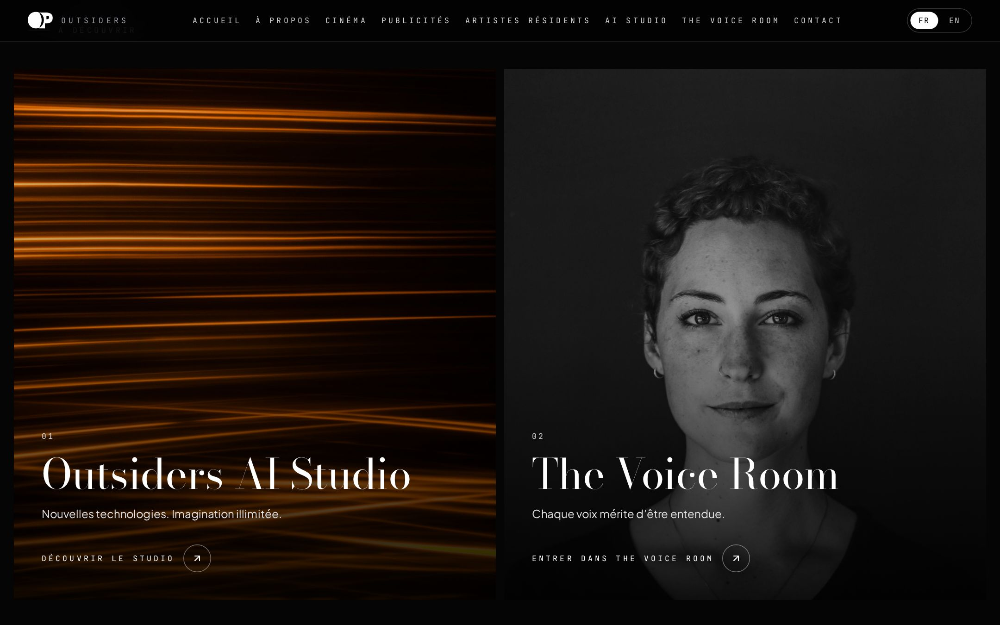
Les deux bandeaux sur la page d'accueil.
Outsiders Production · Mode d'emploi20
13 · Bonnes pratiques
13
Bonnes pratiques
Question
Réponse
Je ne vois pas mes changements
Avez-vous cliqué sur « Enregistrer » ? Le bouton est grisé quand il n'y a rien à publier.
Mon image ne s'importe pas
Elle dépasse 6 Mo. Réduisez-la (JPG, qualité 80 %) avant de l'importer.
Le texte anglais n'a pas changé
Chaque langue se modifie séparément : Textes FR et Textes EN, ou les champs Français / Anglais d'une fiche.
J'ai supprimé un film par erreur
Avant d'enregistrer : flèche « annuler ». Après : Historique → Restaurer.
Une vidéo ne se lit pas
Vérifiez que le lien YouTube ou Vimeo est public (ou non répertorié) et que l'intégration est autorisée. Les liens Netflix s'ouvrent toujours dans un nouvel onglet.
L'ordre d'affichage
Celui de la liste dans l'admin : glissez avec la poignée ⋮⋮.
À retenirModifier → Aperçu → Enregistrer. Tant que vous n'avez pas enregistré, le site public ne change pas. Et l'historique garde toujours vos 10 dernières versions.